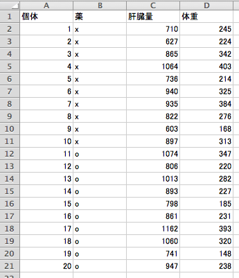
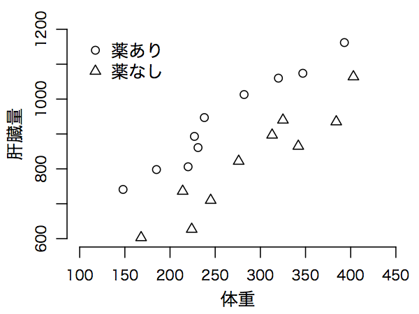

図#figdataliverweight#193>は、薬剤の投与によってラットの肝臓量と体重がどう変化するか検証するために集められたデータ dataliverweight.csv である。
<#1658#>図<#1658#> 5.1:
<#1659#>薬剤の投与がラットの肝臓量（mg）と体重（g）に及ぼす影響<#1659#>

|
図#figplotdataliverweight#202>は薬剤の有無別にデータをプロットしたものである。
体重が同じであれば、薬ありの方が肝臓量は高い傾向にある。
<#1661#>図<#1661#> 5.2:
<#1662#>群別プロット<#1662#>

|